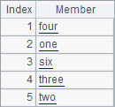
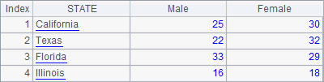
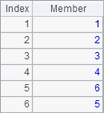

3.3.3 Computing rankings based on a TSeq
There are two common ways for computing rankings: ranking members with/without duplicate values counted. For example, if there are two players tied for first place in a competition and the duplicate ranking values are counted, the next player following them would have a third ranking. But if the duplicate ranking value isn’t counted, the second place will follow without taking the extra ranking value into account. esProc has rank function to compute the rankings and rank to compute the ranking of a certain value. The use of @i option with the functions will compute rankings or the ranking without counting the extra ranking(s). For example:
|
|
A |
|
1 |
=demo.query("select * from EMPLOYEE") |
|
2 |
=A1.ranks(SALARY) |
|
3 |
=A1.ranks@i(SALARY) |
|
4 |
=A1.rank(10000,SALARY) |
|
5 |
=A1.rank@i(10000,SALARY) |
A2 computes the rankings of salaries of all employees. A3 computes them without considering duplicate values. Results of A2 and A3 are as follows:
 
Now let’s look at the employee data in A1:

It can be seen by comparison that the employees with the same salary, such as Rebecca and Emily, get the same ranking for their salaries either way. But obviously they rank much higher in the result of A3 because duplicate ranking values are ignored and they won’t affect the rankings of the subsequent employees. In fact it is the result in A2 that reflects the rankings more objectively.
A4 computes the ranking of 10,000 among employee’s salaries. A5 computes the ranking of 10,000 by not taking the duplicate values account. Results of A4 and A5 are as follows:


A higher ranking is obtained without counting the duplicate values. rank@i and ranks@i compute rankings in a way similar to that in which id function is used to list all the unique members before computing rankings.